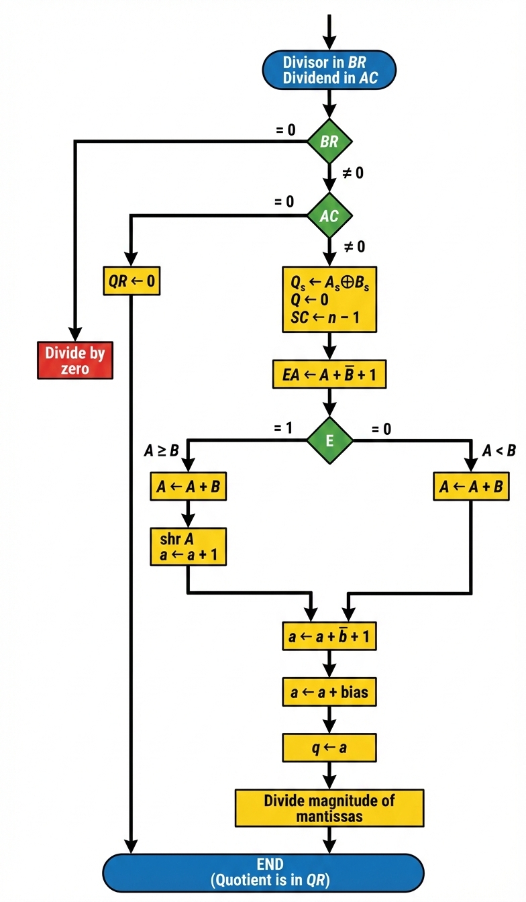

🔢 Floating-Point Division
An Interactive Guide to Understanding Floating-Point Arithmetic
📚 Overview
Floating-point division is a complex operation that requires careful handling of mantissas, exponents, and special cases. Unlike multiplication, division requires a normalization step after the operation, and the quotient is obtained through an iterative process.
Key Difference from Other Operations: The quotient is obtained after the division, and a dividend alignment must be carried out as a normalization step before the actual division.
🔄 The Five-Step Division Algorithm
1
Check for Zeros
Verify that neither operand is zero to avoid illegal operations.
2
Initialize & Evaluate Sign
Set up registers and determine the sign of the result using XOR.
3
Align the Dividend
Normalize the dividend to ensure proper positioning.
4
Subtract the Exponents
Calculate the result exponent by subtracting divisor from dividend exponent.
5
Divide the Mantissas
Perform the iterative division process to obtain the quotient.
📊 Division Process Flowchart

💻 Interactive Division Calculator
⚠️ Special Cases & Important Notes
Division by Zero: If the divisor is zero, the operation is illegal and must be terminated with an error message.
Zero Dividend: If the dividend is zero (but divisor is not), the quotient is simply zero and the operation terminates immediately.
Normalization Requirement: An alternative overflow procedure must be provided before division to shift the dividend to the right and increment the dividend exponent if necessary. This is unique to division operations.
Result Location: After division, the mantissa quotient resides in Q (quotient register) and the remainder in A. The floating-point quotient is already normalized, and the exponent of the remainder is the same as the dividend's original exponent.
🔍 Fixed-Point vs Floating-Point Division
Fixed-Point: The divide-overflow check is similar to fixed-point operations, ensuring proper alignment for fraction division.
Floating-Point Specifics:
- ✓ Requires exponent subtraction (not present in fixed-point)
- ✓ Needs special overflow procedure before division begins
- ✓ Result is automatically normalized
- ✓ Dividend alignment is critical for proper operation